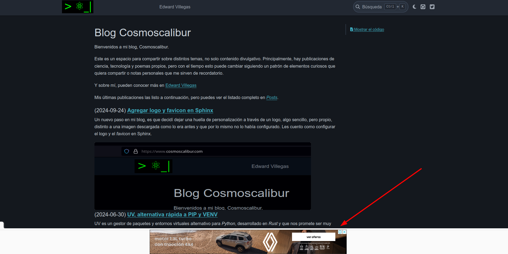

Entradas etiquetadas sphinx
Agregar Google Ads en Sphinx
- 2024-09-25
Siguiendo con ajustes en mi blog, algo que quería darle una nueva oportunidad, así algunos lo odien, es a Google Ads y ver esto como permite generar algún ingreso ahora que muchos usamos bloqueadores (sí, yo también). Les cuento como configurarlo a través de la modificación de las plantillas por defecto.
Adding Google Ads to Sphinx
- 2024-09-25
Following my recent adjustments to my blog, I wanted to give it another chance, and some people may not like it, but I’m putting up Google Ads and seeing if this can generate some income now that many of us use blockers (yes, even me). I’ll tell you how to configure it through modifying the default templates.
Agregar logo y favicon en Sphinx
- 2024-09-24
Un nuevo paso en mi blog, es que decidí dejar una huella de personalización a través de un logo, algo sencillo, pero propio, distinto a una imagen descargada como lo era antes y que por lo mismo no lo había configurado. Les cuento como configurar el logo y el favicon en Sphinx.
Adding Logo and Favicon to Sphinx
- 2024-09-24
A new step in my blog, I decided to leave a personal touch through a logo, something simple but distinctive from pre-downloaded images like before, and which is why I hadn’t configured it yet. I’ll tell you how to configure the logo and favicon for Sphinx.
Migrating my blog from Nikola to Sphinx
- 2024-05-24
Migrating from a static generator to another isn’t an entirely transparent process, so I’ll explain some simpler steps to help you migrate your blog from Nikola to Sphinx.
Migrando mi blog de Nikola a Sphinx
- 2024-05-24
Migrar de un generador estático a otro no es un proceso del todo transparente, así que aquí te explico algunos por menores para hacer una migración de Nikola a Sphinx.
Creating a blog with Sphinx
- 2024-05-16
Finally, I’ve taken the step of restarting my blog, and with it, the migration process that I wanted to undertake. On this process, I’ll be telling you about it in several entries, since the migration isn’t complete yet, and this is the first entry regarding this topic, covering the basics so you don’t fail on your attempt.
Crear un blog con Sphinx
- 2024-05-16
Por fin he dado el paso de retomar el blog, y con ello un proceso de migración que deseaba, generar el blog con Sphinx. Sobre este proceso les estaré contando en varias entradas, ya que la migración no la he concluido, y esta es la primera entrada al respecto, con lo más básico para iniciar y no fracasar en el intento.
Creating Documentation for a Python Project with Sphinx
- 2020-01-06
Without a doubt, an important step in any development project (and not just software projects) is generating documentation. For software projects, it’s possible to rely on tools that help automate documentation generation by extracting comments from the code, using keywords and markup language to modify style in the text, or including other elements such as images, equations, and links.
Crear documentación de un proyecto Python con Sphinx
- 2020-01-06
Sin duda, una etapa importante en cualquier proyecto de desarrollo (y no solo de software) es la generación de la documentación. En el caso de software es posible asistirse de herramientas que ayudan a automatizar la generación de la documentación mediante extracción de comentarios en el código, usar palabras claves y lenguaje de marcado para modificación de estilo en el texto o inclusión de otros elementos que no sean solo texto plano (imágenes, ecuaciones, enlaces entre otros).